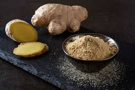
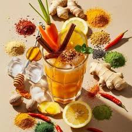

Experiencia
MENÚ
🏡Principal📞Contacto
🙈Conocenos
🌱Planta y Beneficios
🍪Producto
⏩Reproducción de Planta
🎮Memorama
Experiencia y uso del jengibre
El jengibre ha sido utilizado durante siglos en distintas culturas por sus propiedades medicinales y culinarias. En países asiáticos como India y China, se emplea tradicionalmente para aliviar problemas digestivos y fortalecer el sistema inmunológico.
Actualmente, el jengibre también forma parte de bebidas naturales, tés, suplementos alimenticios y productos cosméticos debido a sus beneficios para la salud.
Experiencia en la cocina
El jengibre se utiliza en recetas dulces y saladas, aportando un sabor picante y fresco. Es común en infusiones, galletas, sopas, salsas y jugos naturales.
Experiencia cultural y tradicional
El jengibre ha formado parte de la medicina tradicional en Asia desde hace más de 3,000 años. En culturas como la china e india, se utiliza en remedios naturales para mejorar la energía del cuerpo y aliviar molestias estomacales.
En muchos países, el jengibre también se relaciona con prácticas de bienestar y alimentación saludable debido a sus propiedades antioxidantes y relajantes.
Uso en bebidas
El jengibre es un ingrediente principal en bebidas calientes y refrescantes como tés, licuados, aguas naturales y bebidas energéticas. Su sabor intenso ayuda a brindar una sensación de frescura y bienestar.
Uso en la gastronomía
En la cocina internacional, el jengibre se utiliza para condimentar carnes, mariscos, arroz, sopas y postres. También es muy común en recetas orientales por su aroma y sabor picante.
Experiencia en productos naturales
Actualmente, muchas empresas elaboran productos a base de jengibre como aceites, cápsulas, jarabes y cremas naturales. Esto ha incrementado su popularidad en el mercado de la salud y la belleza.
Importancia ambiental
El cultivo del jengibre puede contribuir al desarrollo agrícola de comunidades rurales, generando empleo y promoviendo la producción natural en diferentes regiones tropicales.
Curiosidades del jengibre
Aunque comúnmente se le llama raíz, el jengibre realmente es un rizoma subterráneo. Además, su aroma característico proviene de aceites naturales presentes en la planta.
Nuestra experiencia con el jengibre
Trabajar con el jengibre fue una experiencia muy interesante y enriquecedora, ya que aprendimos sobre sus beneficios medicinales, su importancia en la alimentación y sus diferentes usos en la vida cotidiana.
Durante este proyecto descubrimos que el jengibre no solo es una planta saludable, sino también un producto muy importante en la economía y la cultura de muchos países.
Nos sentimos muy bien realizando este trabajo porque pudimos aprender cosas nuevas, investigar información útil y compartir conocimientos sobre una planta natural con muchos beneficios para la salud.
 |
|
 |
 |
INTEGRANTES

 2026
2026